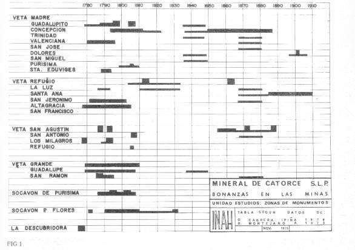

Chart showing the
periods of greatest activity for the major mines in the Real de Catorce
area.
(Taken from Diaz-Berrio
F., Salvador,
page 13)
-------------------------------------------------------------------------------------------------------------------------------------------------------------------
Map showing some of the historical mines in the area of Real de Catorce.
---------------------------------------------------------------------------------------------------------------------------------------------------------------------
The following mines have their own pages with descriptions and photos.
---------------------------------------------------------------------------------------------------------------------------------------------------------------------
La Descubridora
(The Discovery)
The historical
references are inconsistent about the sequence of events, but all agree
that La Descubridora was the first silver discovery in the Sierra
Catorce.
---------------------------------------------------------------------------------------------------------------------------------------------------------------------
El Negrito
The El Negrito
Mine is located high above and to the southeast of the "Pueblo
Fantasma" area. It was notible for having a picturesque chapel.
----------------------------------------------------------------------------------------------------------------------------------------------------------------------
El Milagro
The El Milagro Mine is on the old road southeast and above the San Augustin mine.
----------------------------------------------------------------------------------------------------------------------------------------------------------------------
The Major Ore Veins and Mines in 1872
(from (IPIÑA,
p 168-169)
Veta
Madre
- Purisma - 503
meters deep.
- Valencia
- San Jose
- Guadalupe
- Socavon del Cochino
- Concepcion
- Guadalupita
- Estrella
- Zacarias
- San Miguel
- Dolores
- Santa Edwige
Veta de San Geronimo
- Altagracia
- Animas
- San Geronimo
- Filosofal
- Santa Ana
- Capitanita
- el Senor de Metehuala
- Refugio
- Rayas
- Naranjera
- Cinco Senores
- San Jose de Gracia
- San Eduardo
- Angeles
- Refugio
- el Senor del Milagro
- San Agustin
- Santa Maria
- San Antonio
- Promotorio
- Venadito
- San Ramon
- Guadalupe
- San Francisco
- San Juan
- San Miguel
- San Rafael
- San Plutarco
- San Jose
- La Luz
The Haciendas de Beneficio in 1872
(Reduction works for the processing of ore.)
(from (IPIÑA,
p 174)
| Haciendas
de Beneficio |
Methods
|
San
Juan Nepomuceno
|
Patio,
Fuego
|
El
Refugio
|
Patio |
Apolonio
|
Patio,
Cazo
|
Zerraton
|
Patio,
Cazo |
Del
Aqua
|
Fuego |
Guadalupe
|
Fuego,
Patio |
Los
Matas
|
Patio,
Cazo, Fuego |
Juarez
|
Patio,
Cazo, Fuego |
San
Pedro D. Julio
|
Patio,
Cazo, Fuego |
Morquecha
|
Patio,
Cazo, Fuego |
Grande
|
Patio,
Cazo, Fuego |
Almaraz
|
Patio,
Cazo, Fuego |
Rocha
|
Patio,
Cazo, Fuego |
San
Jose
|
Patio,
Cazo, Fuego |
Bernal
|
Fuego |
----------------------------------------------------------------------------------------------------------------------------------------------------------------------